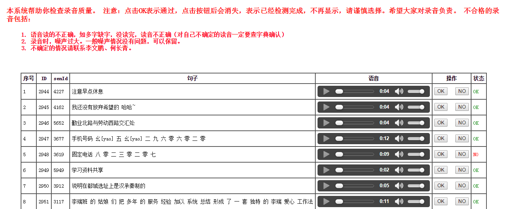

语音识别的声学建模技术是一项复杂的大数据处理技术，受到信道、噪声、口音、说话风格等多个可变因素的影响。因此训练鲁棒的声学模型需要大量的训练样本。因此，我们通过采集不同人的手机录音来不断改善识别效果。您贡献的样本将极大提升语音识别的性能!
扫描二维码，下载手机语音采样Android版APP。
录音结束后，登录网站进行质量检查和确认。
网址为：http://10.13.34.40:8063/Speech/home/wavtest.php?name=username&passwd=password 其中，
username：为您的用户名
password：为您设定的密码
